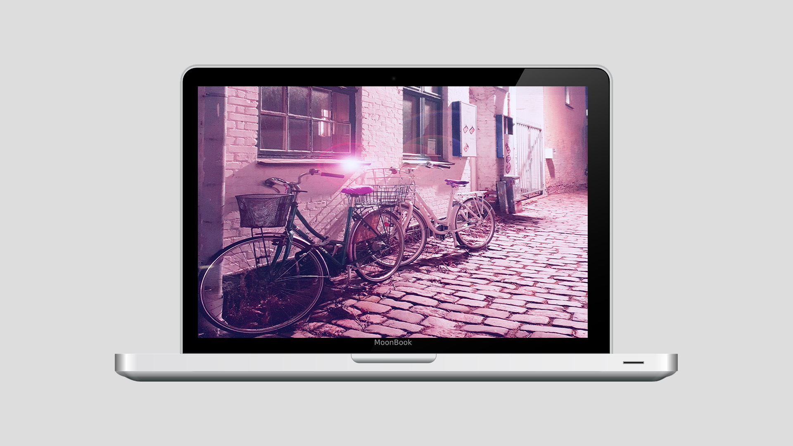

Tema 5
05.02.01 Art Gallery

I forbindelse med denne opgave, blev vi bedt gå på opdagelse i vores omgivelser og lære vores kamera at kende. Vi blev bedt tage fotos af forskellige motiver, for til sidst at udvælge tre billeder, vi skulle redigere efter en selvvalgt fotostil.
Jeg benyttede min smartphone, og gik på opdagelse efter forskellige vinkler og motiver, til mine fotos. Under fotograferingen, gjorde jeg brug af følgende:
- Fotografering med nærskud og vidskud
- Forskellige perspektiver, frøperspektiv og normalperspektiver
- Lang lukketid
- Blænde
- ISO
Processen
Jeg lærte mit kamera at kendte, og brugte RAW-mode, og pro-indstillingerne herunder. Efter endt fotografering, skulle filerne eksporteres til min pc, og jeg kom til at lære forskellige filformater at kende, herunder RAW, .png og .jpg.
Jeg brugte tid og fokus på at tilrettelægge en fotostil som udgangspunkt til at lave mine billeder. Jeg valgte at benytte en fotostil, inspireret af cyberpunkkulturen, som kendetegnes ved stærke neonfarver, inspireret af den japanske kultur. Der er tale om en form for surrealisme i farver og motiver, og jeg valgte at benytte mig af denne stil.
Jeg lærte flere værktøjer at kende i Adobe Photoshop, og forsøgte at have fokus på diverse billedkompositioner, herunder rule of thirds og focal points, som jeg har lært om på tidligere temaer.
Resultatet
Jeg endte med at kunne præsentere tre billeder, redigeret efter samme fotostil. Resultaterne ses her: